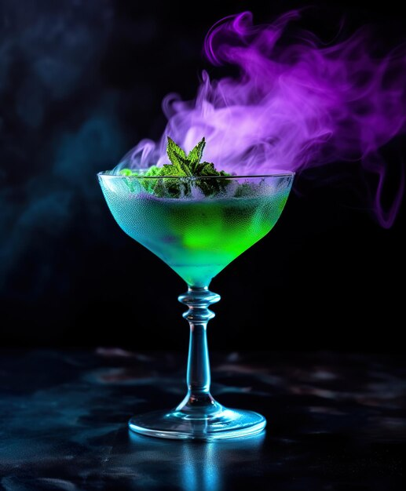
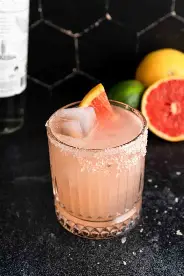
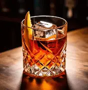

Where history meets the modern glass
We explore the stories of memorable cocktails, their origins and the techniques that make every drink worth remembering.
EXPLORE RECIPES →We explore the stories of memorable cocktails, their origins and the techniques that make every drink worth remembering.
EXPLORE RECIPES →

A refreshing cocktail with a smoky and citrus character.

A classic drink with a strong and timeless flavor.

A balanced cocktail with fresh and herbal notes.

A bold cocktail with a perfect bitter-sweet balance.